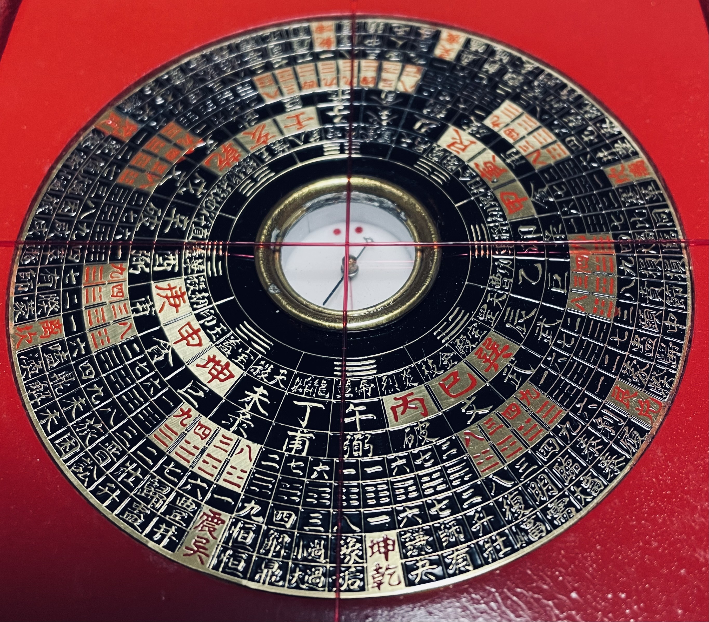
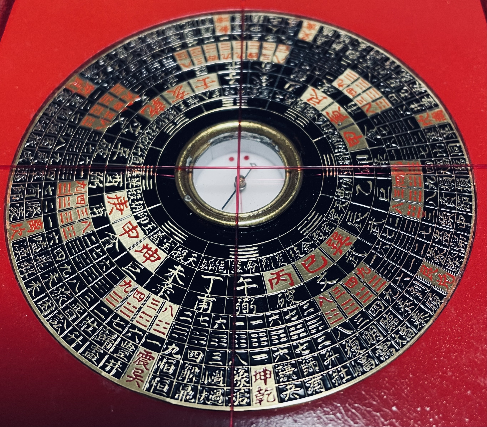

（伏見稲荷大社付属講務本庁播州加西支部)


支部設立：昭和40年9月30日
支部大祭：3月
【祭神】高森稲荷
田原駅から東へ500メートルにある高森稲荷の祀ってある小高い丘は、千歳山城跡（田原山城）です。最初の城主は平将門の末裔という相馬小七郎秀政で嘉吉の乱により千歳山城も山名軍に降り、網引の高田氏から来た養子高田兼清があとを継ぎました。 その後、千歳山城は、五代目政弘が、武士をすて農民になったので廃城となった。三段構成の削平地から成っており、それぞれの段には隅に土塁のような土盛りと犬走りなどが残されている 高森稲荷は、霊験あらたかであった為、近郷近在の信仰を集め昭和10年に荒廃した社殿を賀茂村西剣坂の中村忠次郎に請け負わせ信者らが社殿を奉献した。
【沿革】
昭和40年それまであった高森稲荷講が140名の講員に達したことから材木よし・岸本光白らにより伏見稲荷大社講務本庁播州加西支部が設立認可され橋爪繁次が支部長となる
講員加入の案内
講員の種別や特典、加入方法をご案内いたします。
講員に加入されますと、ご神前に加入の奉告が行われ、講員証・一代守・撤下神饌が授与されます。 講員は本庁台帳に登録され、毎日朝夕2回伏見稲荷大社の本殿で家内安全・生業繁栄が祈願されます。 講員大祭が毎年体育の日の前々日と前日に齋行されます。講員各位には参列方をご案内いたします。参列の講員には大祭記念品・撤下神饌・稲荷暦などが贈呈されます。不参の講員には、大祭記念品・稲荷暦が贈呈されます。 講員には、年末に新年よりお祀りいただく特別神札を授与いたします。 講員には、本庁で年4回発行する機関紙「大伊奈利」を贈呈します。 講員は大社の各祭典に参列し、本庁が行う普通指導者講習会に参加することができます。
講費（年間） 2,000円
 


電話：0790‐46‐1730
メールアドレス：wwwwww2949 @gmail.com
#占い#タロット#家相#姓名判断#祈祷#お祓い#易#四柱推命#九星気学#祈祷#メールアドレス：wwwwww2949 @gmail.com